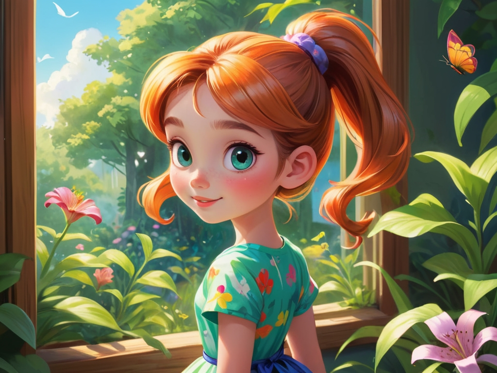
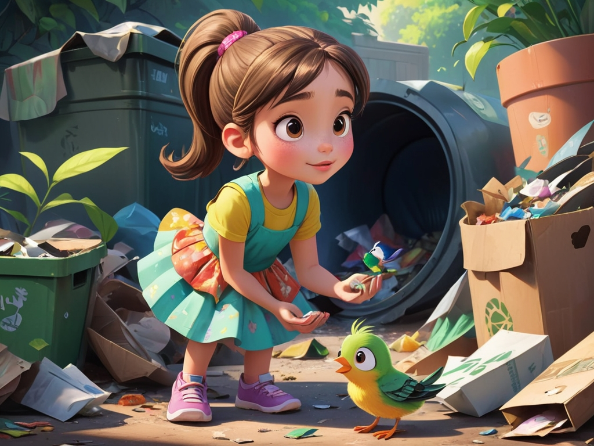
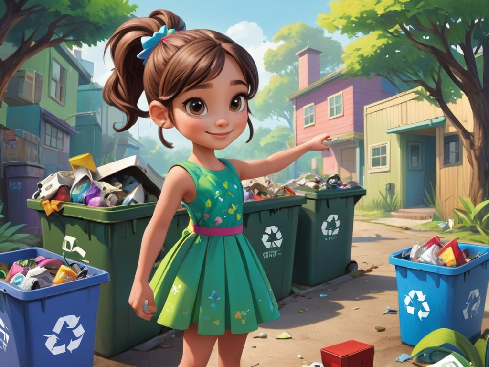
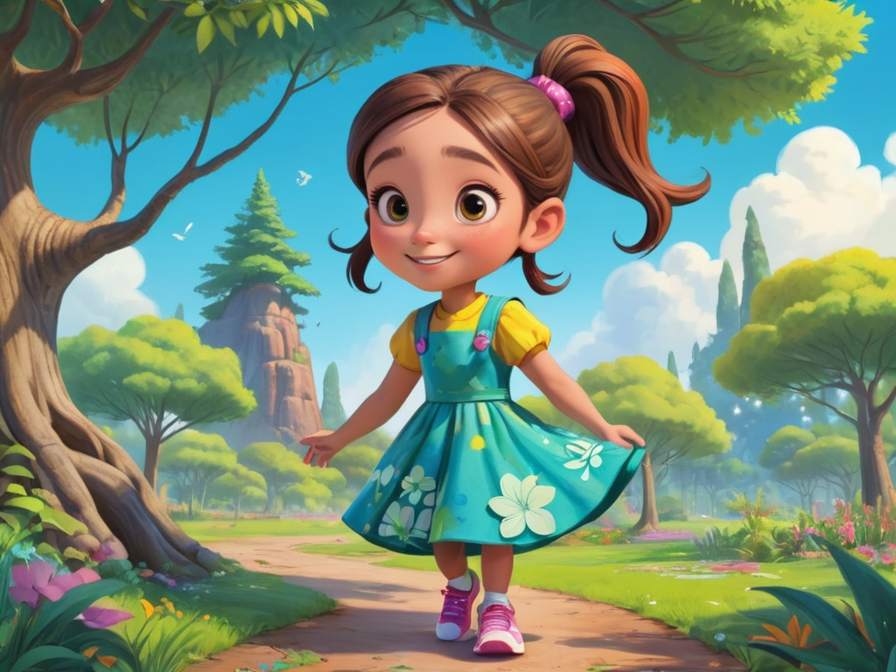
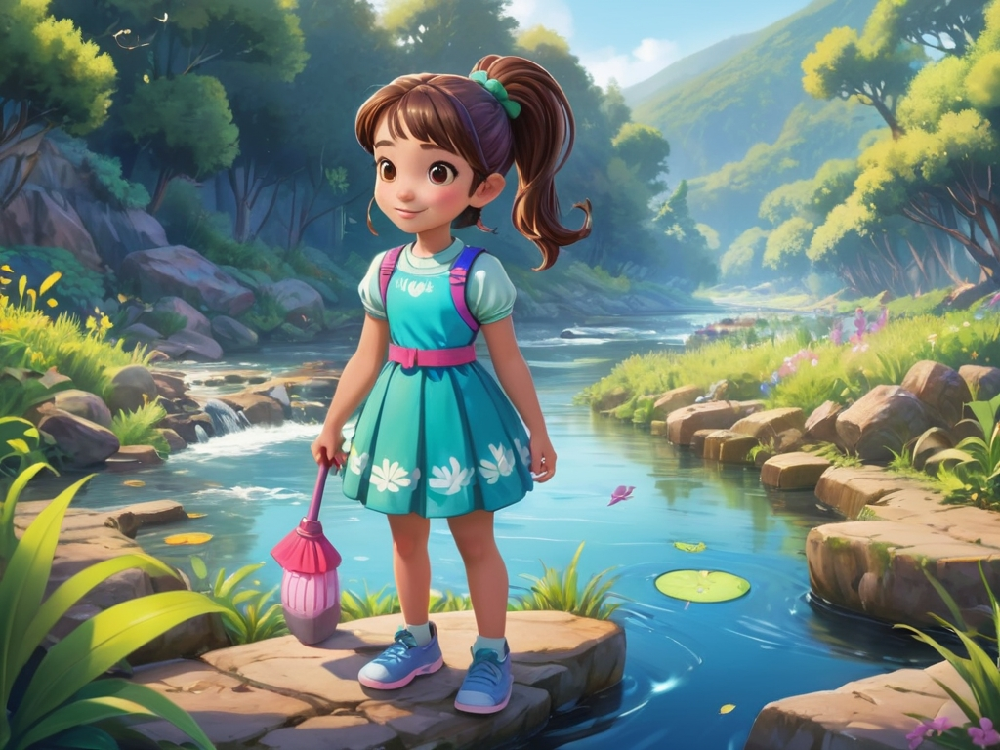
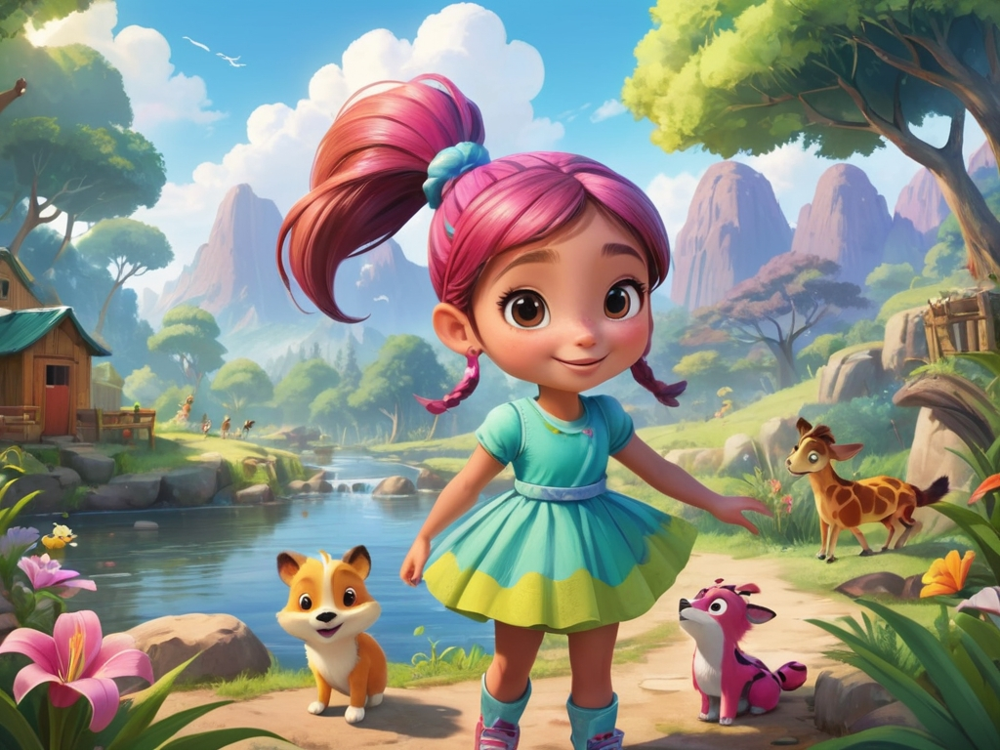
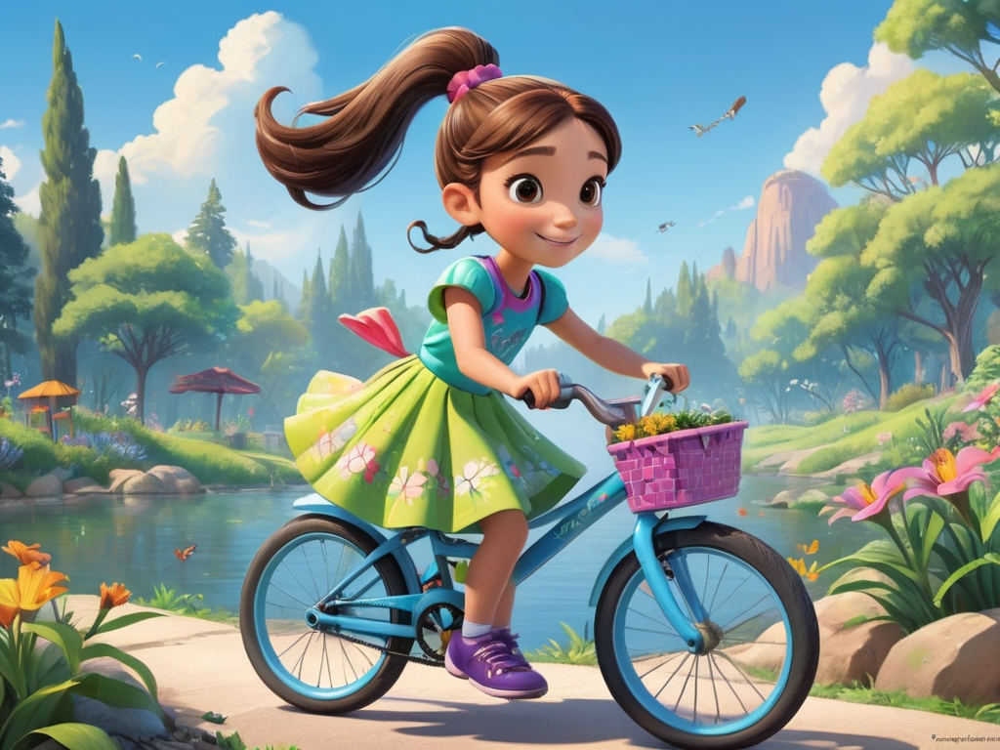
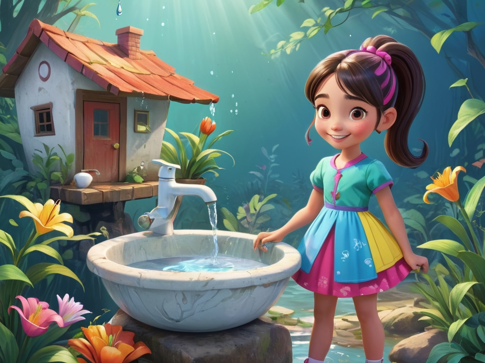
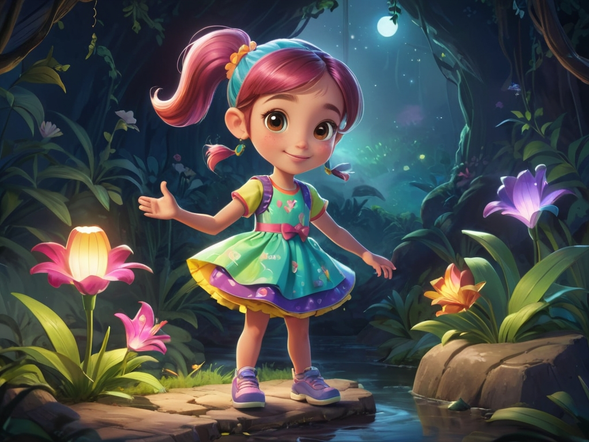
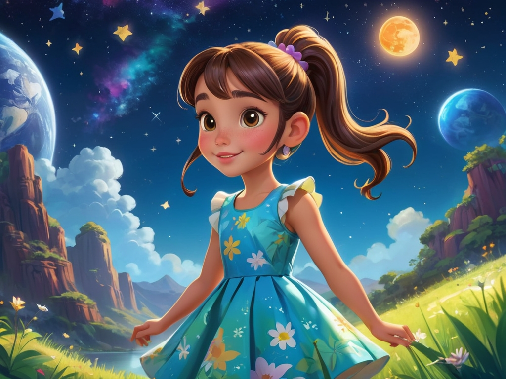

Scene 1: The Morning Discovery
Lily wakes up and sees the beautiful garden outside her window. Sunlight is shining on the leaves, and she decides to go outside and explore nature.
Scene 2: The First Question
Lily finds a little bird trapped in some trash. She feels worried and asks her mom, “Why do people throw garbage everywhere?”
Scene 3: Learning About Recycling
Lily’s mom teaches her how to sort garbage: recyclables, non-recyclables, and hazardous waste. Lily happily helps put the trash in the correct bins.
Scene 4: The Magic of Green Plants
Lily walks into the park and sees a big tree. Her mom explains that trees absorb carbon dioxide and release oxygen, helping the Earth breathe.
Scene 5: Saving the River
Lily comes to a small river and notices that the water is polluted. She decides to team up with her friends to clean up the river and make the water clear again.
Scene 6: Learning About Animals
Lily and her mom visit an animal sanctuary. She learns about the challenges animals face in the wild and promises to protect their homes.
Scene 7: Green Transportation
Lily and her mom ride their bicycles together. Lily learns that riding a bike instead of driving helps reduce air pollution and makes the environment better.
Scene 8: Saving Water
Back at home, Lily learns how to save water, like turning off the tap while brushing her teeth and using a basin to wash vegetables.
Scene 9: The Energy Saver
Lily turns off lights when not in use and unplugs unused appliances. Her mom praises her for being a “little energy-saving ambassador.”
Scene 10: Lily’s Dream
At the end of the day’s adventure, Lily makes a wish under the stars: “I hope our Earth will always stay beautiful.” She feels hopeful and decides to always protect the planet.
